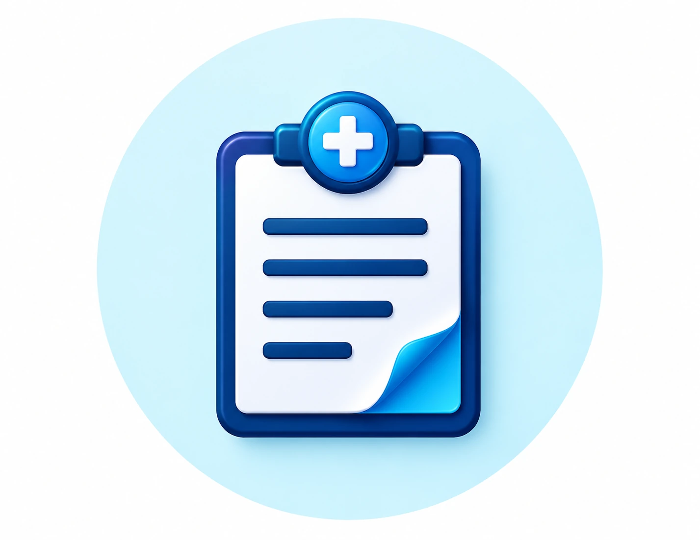
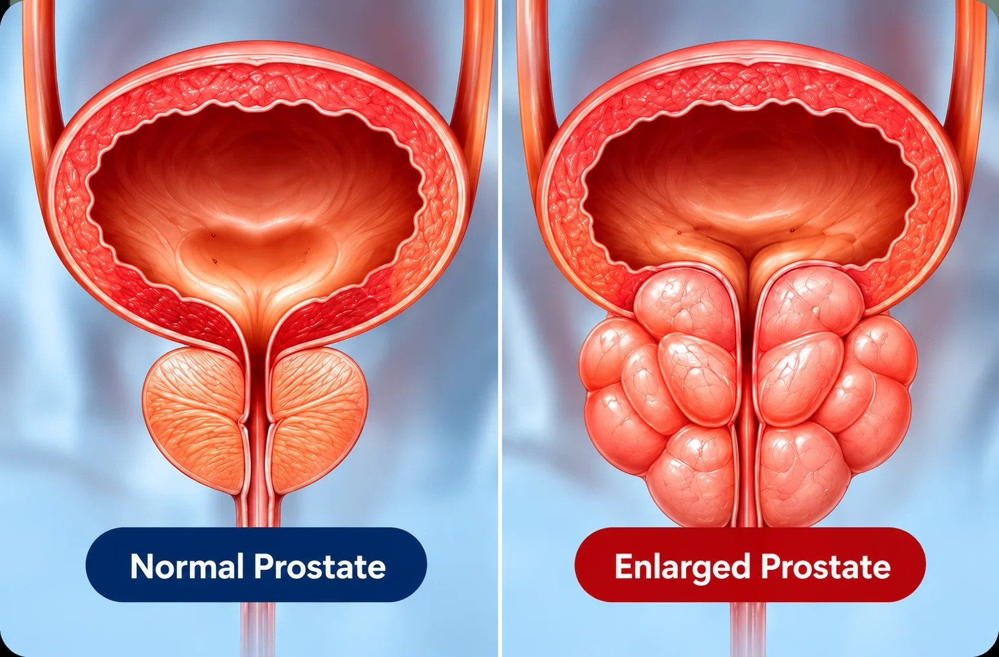
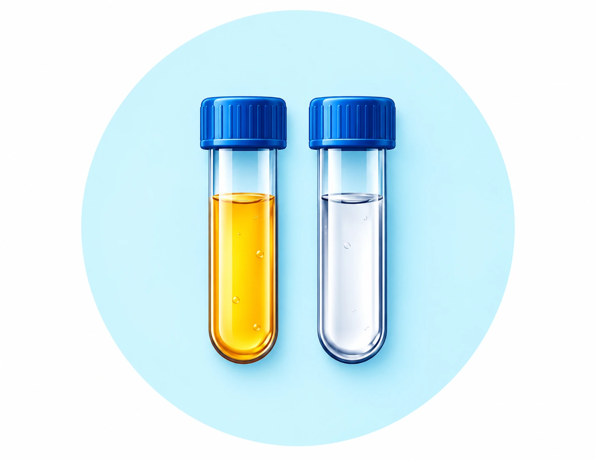
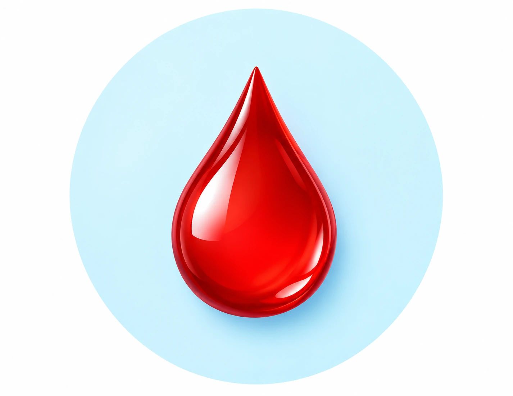
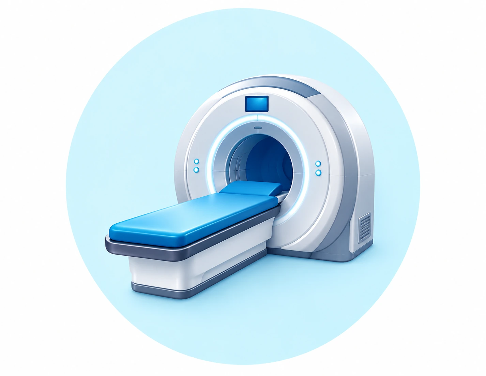

Prostate Care
Advanced Treatment
Advanced Treatment
for Prostate Health
Minimally invasive procedures, faster recovery and personalised care for enlarged prostate and other prostate-related conditions.
Book Your AppointmentAdvanced
Technology
Technology
Minimally Invasive
Procedures
Procedures
Faster
Recovery
Recovery
Personalised
Treatment Plan
Treatment Plan

UnderstandingWhat are
What are
Prostate Conditions?
The prostate is a small gland located below the bladder that surrounds the urethra, the tube that carries urine out of the body. When the prostate enlarges, it can narrow the urethra and affect urine flow. Benign prostatic hyperplasia (BPH) is a noncancerous condition and is a common cause of urinary problems in men, especially as they get older.
Common Symptoms
Prostate conditions can affect urine flow, bladder emptying and daily life. Common symptoms include:
- Difficulty starting urination
- Sudden or urgent need to urinate
- Weak or interrupted urine stream
- Feeling the bladder is not fully empty
- Frequent urination during the day
- Dribbling after urination
- Waking up at night to urinate
- In some cases, blood in the urine
Diagnosis & Evaluation
How Prostate Problems Are Diagnosed
A proper evaluation helps identify the cause of your symptoms and decide the most suitable treatment.
Depending on your condition, the assessment may include:
Medical History

Urine Tests

PSA Blood Tests

Imaging Tests
What to Expect During Treatment
Your care plan will be based on your diagnosis, recommended procedure and individual needs.
Before Treatment
- Medical assessment
- Discuss treatment options
During Procedure
- Procedure-specific care
- Duration varies by treatment
After Treatment
- Recovery instructions
- Guidance on managing discomfort
Follow-up Care
- Check recovery and test results
- Advice to help prevent recurrence
Frequently Asked Questions
Your Questions Answered
Benign prostatic hyperplasia (BPH) is a noncancerous enlargement of the prostate that can press on the urethra and affect urine flow.
TURP may be considered when prostate enlargement causes bothersome urinary symptoms and other treatments have not helped enough. A urologist can advise whether it is suitable.
Symptoms can include a weak stream, difficulty starting urination, urgency, frequent urination, waking at night to urinate, and a feeling that the bladder has not emptied fully.
It is a procedure that uses transrectal ultrasound to guide small tissue samples from the prostate for laboratory examination when a clinician recommends further evaluation.
No. BPH is noncancerous and does not itself mean you have prostate cancer. Similar symptoms can have different causes, so assessment by a clinician is important.
Recovery varies. Your care team will explain catheter care if needed, activity restrictions, hydration, medicines, and when to return for follow-up.
Evaluation may include your medical history, physical examination, urine tests, PSA blood testing, and imaging or other tests depending on your symptoms.
Seek urgent medical care if you cannot pass urine, have heavy blood in the urine, or have urinary symptoms with fever or severe pain.
Need guidance about prostate care?
Consult a urologist to understand your condition and the most suitable treatment option.